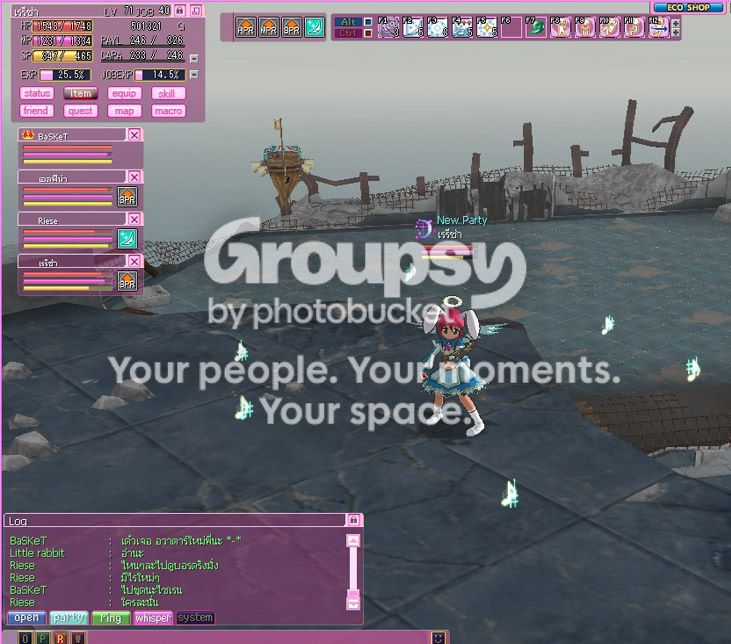

Bard skill เท่าที่ลองสวิชไปเล่นดู
หลังจากที่เบื่อเกบจ้อบดรูอิด จึงสวิชไปเป็นบาร์ดเล่นๆ เพื่อความหนุกหนาน ผลที่ได้ก็คือ
สวิชกลับแทบไม่ทัน T-T เพราะสกิลมันแย่จริงๆค่ะ อ่ะ ลองมาดูกันนะ
ในรูปเป็นความกว้างของสกิลซัพทุกประเภทค่ะ จะกว้างเท่ากันหมด นับจากตัวผุ้เล่น
 musical mastery (5 เลเวล)
musical mastery (5 เลเวล)
สกิลนี้ควรอัพนะคะ เพราะจะทำให้ใช้สกิลได้เร็วขึ้น
 Classic (5 เลเวล)
Classic (5 เลเวล)
สกิลขยายหลอด hp mp sp นั่นเอง อยู่นานพอสมควร จากในรูปอัพไปแค่ 3 เวลนะคะ
เลือดเพิ่มขึ้น 200
 Trance (5 เลเวล)
Trance (5 เลเวล)
สกิลเพิ่มความแรงในการโจมตี โดยมีอาณาเขตเท่าสกิลคลาสสิค (แคบนะ) แร้วความแรงที่เพิ่มมา
แทบสังเกตไม่ได้เรย - - เพิ่มมาแค่ 30 -40 เท่านั้นเอง อย่าอัพเรย เปลือง
 Samba(5เลเวล)
Samba(5เลเวล)
สกิลเพิ่มพลังป้องกันของผู้เล่นในขอบเขต ไม่ได้อัพนะคะ แต่ลองถามคนที่อัพดู
เขาบอกว่า ก็โดนม่อนตีเบาลงจริงๆอ่านะ(น่าสนๆ)
 Requiem (5เลเวล)
Requiem (5เลเวล)
สกิลโจมตีที่ทุกคนต่างหมายปอง - -+ แต่หารู้มั้ยว่า จริงๆแล้วมันห่วยยย มาก!
คือมันจะสร้างวงกลมตัวโน้ตออกมาเหมือนสกิลซัพก่อนหน้า แล้วม่อนที่เดินมาในวงกลม
จะโดนโจมตีทีละ 20-40 ไปเรื่อยๆ -*-(แล้วกี่ชาติมันจะตายล่ะค่ะ) เพราะฉะนั้นอย่าอัพเรย
คนที่ยังไม่ได้ทำสกิลพ้อยฟรีนะคะ แนะนำว่าให้เอาสกิลพ้อยลงจ้อบของดรูอิดดีกว่า เพราะยังมีอะไร
ที่น่าอัพมากกว่าบาร์ดอีกเยอะค่ะ
ถ้ามีข้อผิดพลาดประการใด ขออภัยมา ณ ทีนี้ด้วยนะคะ >.<
เพิ่มเติมให้นะค้า กรณีทดลอง อิอิ
สวิชกลับแทบไม่ทัน T-T เพราะสกิลมันแย่จริงๆค่ะ อ่ะ ลองมาดูกันนะ
ในรูปเป็นความกว้างของสกิลซัพทุกประเภทค่ะ จะกว้างเท่ากันหมด นับจากตัวผุ้เล่น

musical mastery (5 เลเวล)สกิลนี้ควรอัพนะคะ เพราะจะทำให้ใช้สกิลได้เร็วขึ้น
Classic (5 เลเวล)สกิลขยายหลอด hp mp sp นั่นเอง อยู่นานพอสมควร จากในรูปอัพไปแค่ 3 เวลนะคะ
เลือดเพิ่มขึ้น 200
Trance (5 เลเวล)สกิลเพิ่มความแรงในการโจมตี โดยมีอาณาเขตเท่าสกิลคลาสสิค (แคบนะ) แร้วความแรงที่เพิ่มมา
แทบสังเกตไม่ได้เรย - - เพิ่มมาแค่ 30 -40 เท่านั้นเอง อย่าอัพเรย เปลือง
Samba(5เลเวล)สกิลเพิ่มพลังป้องกันของผู้เล่นในขอบเขต ไม่ได้อัพนะคะ แต่ลองถามคนที่อัพดู
เขาบอกว่า ก็โดนม่อนตีเบาลงจริงๆอ่านะ(น่าสนๆ)
Requiem (5เลเวล)สกิลโจมตีที่ทุกคนต่างหมายปอง - -+ แต่หารู้มั้ยว่า จริงๆแล้วมันห่วยยย มาก!
คือมันจะสร้างวงกลมตัวโน้ตออกมาเหมือนสกิลซัพก่อนหน้า แล้วม่อนที่เดินมาในวงกลม
จะโดนโจมตีทีละ 20-40 ไปเรื่อยๆ -*-(แล้วกี่ชาติมันจะตายล่ะค่ะ) เพราะฉะนั้นอย่าอัพเรย
คนที่ยังไม่ได้ทำสกิลพ้อยฟรีนะคะ แนะนำว่าให้เอาสกิลพ้อยลงจ้อบของดรูอิดดีกว่า เพราะยังมีอะไร
ที่น่าอัพมากกว่าบาร์ดอีกเยอะค่ะ
ถ้ามีข้อผิดพลาดประการใด ขออภัยมา ณ ทีนี้ด้วยนะคะ >.<
เพิ่มเติมให้นะค้า กรณีทดลอง อิอิ
Mahpanda เขียน:อ่านคุณ จขกท. ว่าบาร์ดแบบนั้นแล้วเศร้าใจเล็กๆ แฮะ =w=
เราเป็นคนนึงเลยที่คิดไว้ตั้งกะทีแรกสุดแล้วว่าจะเล่นบาร์ด แล้วก็ค่อนข้างถูกใจมากกว่าดรูอิดซะด้วยสิ ตอนได้มาเล่นจริงๆ
จะบอกคร่าวๆ เท่าที่เราได้เล่นมานะคะ
เริ่มจากอันนี้ก่อนเลย สกิลที่คุณ จขกท. ยังไม่ได้ลองใช้ Samba ค่ะ
อันนี้คือก่อนใช้ ดูที่ DEF นะคะ
ส่วนอันนี้คือขณะใช้สกิล
จาผมปนะคะ
DEF ด้านหน้า เพิ่มจาก 20 เป็น 45
DEF ด้านหลัง เพิ่มจาก 63 เป็น 88
คือที่ lv5 มันจะเพิ่ม DEF ด้านหน้าด้านหลังอย่างละ 25 ก็เท่ากับว่า มันลด Damage ไป 25% กับอีก 25 หน่อย 1 ใน 4 เชียวนา ดีออก =w=
เราเองก็ใช้สกิลนี้เก็บ lv สบายขึ้นเยอะเลยค่ะ โดน Damage ลดลงเยอะเลยล่ะ ถึงจะมีเวลาแค่ 16 วิ แต่มันก็ร่ายไม่ถึงวิ แถมดีเลย์ก็น้อยมากๆ อีกด้วย
แล้วที่สำคัญก็คือ ใช้สกิลเพลงพวกนี้แล้ว เราใช้สกิลอื่นได้ปกติค่ะ(ยกเว้นว่าใช้สกิลเพลง ไม่ว่าจะเพลงเก่าเพลงใหม่ ขอบเขตของวงเดิมจะหายไป)
ก็เท่ากับว่าใช้ท่านี้ แล้วก็ยืนอยู่ในวง แล้วก็ใช้โฮลี่ยิงเรียกมอนเข้ามา หรือจะเดินเข้าไปหาแล้วร่ายใหม่ก็ได้
สกิลของบาร์ดอาจจะมีข้อเสียที่พื้นที่แคบก็จริง แต่ข้อดีก็คือร่ายไว + ถึงเราเคลื่อนไหว พื้นที่ของเพลงก็ไม่ตามตัวเรามา นั่นก็หมายความว่า มีคนชนลุยกับตัวโหดๆ อยู่ เราก็แค่วิ่งเข้าไป ใช้สกิลเพลง แล้วก็จรลีออกมา แค่นั้นเอง มอนไม่วิ่งมาตบเราด้วย เราว่ามีประโยชน์ออกนะคะ
แล้วข้อดีอีกอย่างนึงคือ ต่อให้ไม่ใช่คนในตี้ ถ้ามาอยู่ในวงของเพลง ก็จะได้รับผลนั้นๆ ด้วยล่ะค่ะ(อันนี้ไม่แน่ใจนะคะ แต่ลองให้เพื่อนที่ไม่ได้ตี้เขาวิ่งเข้าๆ ออกๆ วงดู เขาว่าเพิ่ม แต่บังเอิญเพื่อนคนนี้ริงเดียวกัน เลยไม่รู้ว่านับรึเปล่า)
อุ... สาธยายแต่ข้อดี หุหุ เอาเถอะค่ะ เรื่องแบบนี้มันก็แล้วแต่คนชอบแหละนะคะ เพราะถ้าพูดตามตรง นอกจากสกิลเพิ่มป้องกันนี่แล้ว เราก็ไม่กล้าอัพสกิลเพลงอันอื่นเหมือนกัน ด้วยสาเหตุที่ว่า มันร่ายซ้อนกันหลายๆ เพลงไม่ได้นี่แหละ
แต่ที่แน่ๆ ตอนนี้เราติดใจบาร์ดมากค่ะ แล้วก็คิดว่าคงไม่สวิตซ์กลับไปที่ดรูอิดด้วย สำหรับคนที่เก็บ lv คนเดียวอย่างเรา บาร์ดมีประโยชน์มากกว่าเยอะเลยล่ะ(ไว้จ๊อบถึง 30 มีสกิลโจมตีแล้วจะมาสาธยายใหม่)